Taking a model out of the notebook and into a working business system on AWS.
Applied machine learning for MS in Business Analytics students, built around a cloud pipeline on AWS.
Week by week
Spring 2026, Mini 4 · Mondays (lecture) and Wednesdays (lab). Scroll the schedule and the slides follow along: five from each session, picked from the decks I taught from.
Part I: From models to systems
Week 1
No class: spring breakNo class
Week 1
Course Introduction: From ML Models to AI Systems
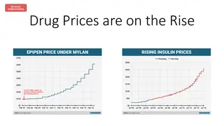
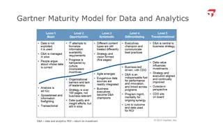
Week 2
Integrating ML Models into Business ServicesGroup exercise: ML Project Triage
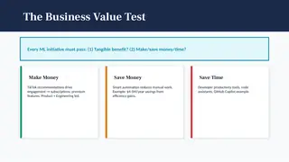
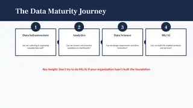
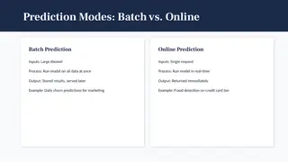
Week 2
Lab: AWS Cloud Setup and ML Pipeline ComponentsIn-class exerciseS3, Lambda, SageMaker, and a MySQL database on RDS
Week 3
Evaluation, Performance, and Testing ML Systems
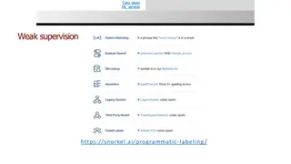
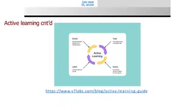
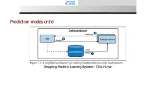
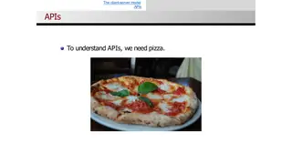
Week 3
Lab: Building a Cloud Data PipelineIn-class exerciseTrain a churn model, store it in S3, score new customers into RDS
Part II: Methods for business problems
Week 4
Natural Language Processing and Large Language Models
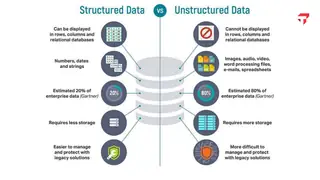
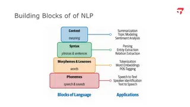
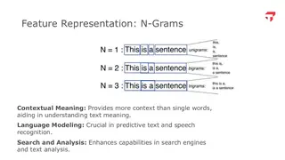
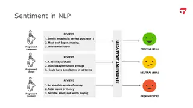
Week 4
Lab: Natural Language Processing and Large Language ModelsIn-class exercise
Week 4
Midpoint project presentations (recorded on Zoom)Presentations
Week 5
Lab: Using an LLM for digital marketingIn-class exercise
Week 6
Time Series Forecasting for Business
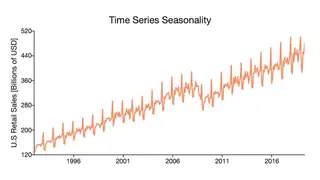
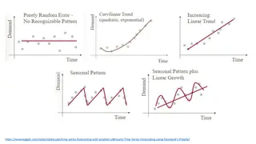
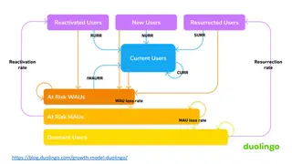
Week 6
Lab: Forecasting Pipeline and Cloud-Connected TableauIn-class exercise
Week 7
Imbalanced Classification and Anomaly DetectionIn-class exercise: build a credit-card fraud detector
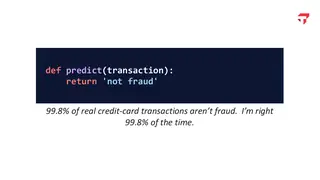
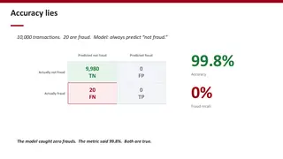
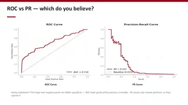
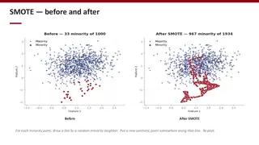
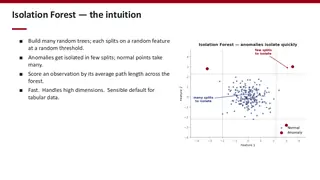
Week 7
Final Project PresentationsPresentations
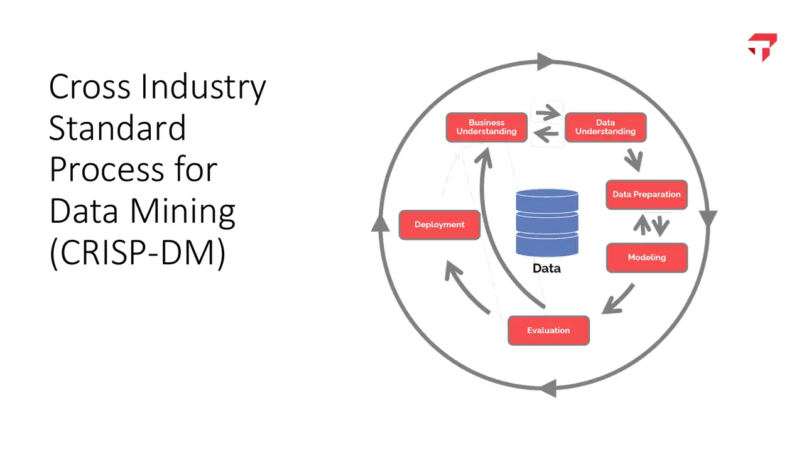
Wed, Mar 11Course Introduction: From ML Models to AI SystemsCRISP-DM: the loop every data mining project runs through
Major assignments
Machine learning projects20%
Guided technical projects done outside class, graded on a three-point scale. ML Project 1 builds the skeleton of a churn pipeline on AWS: data in S3, scoring in Lambda and SageMaker, predictions written to a MySQL database on RDS. ML Project 2 covers NLP and large language models. ML Project 3 forecasts daily peak demand and total energy for ten PJM power load areas with Prophet, writes forecasts and error metrics to RDS, and reads them in Streamlit or Tableau. An optional fourth project is the Tesla vs. Waymo case.
Weekly Canvas quizzes20%
Ten questions on the prior week's lecture and lab, two attempts, no generative AI.
Class participation15%
A short in-class quiz on most Mondays and a submitted lab notebook on most Wednesdays, graded for completion. The two lowest scores are dropped.
Project proposal and update memos5%
A three-page proposal in week 2 naming the business question, a published ML solution to a similar problem, and a dataset, followed by two written progress memos: data and cloud set up by week 3, the full pipeline running by week 6.
Midpoint presentation5%
A five-minute recorded team presentation of data, method, cloud setup, and first results. Each team gives written feedback to three other teams.
Final presentation and demo15%
An eight-minute team presentation with a live walkthrough of the working system: model, cloud database of predictions, and dashboard.
Final report and code20%
A 10 to 15 page report on the business problem, data, method, cloud architecture, results, and reflections, with a documented code repository. Teams of two to five rate each other's contribution.
How the course works
The course takes models out of the notebook and into production. Students put data in S3, score it with Lambda and SageMaker, write predictions to a database they provision themselves on RDS, and read them live in Tableau or Streamlit.
Accuracy is the first number students learn to distrust. The fraud lab opens with a one-line model that never flags fraud and is still 99.8% accurate, then works through class weights, SMOTE, and isolation forests on a precision-recall leaderboard. In ML Project Triage, teams sit on an insurer's strategy board with money for two of six proposals, among them a drone moonshot with no data and a pricing engine that would be illegal in most states.
The team project is a working proof of concept: a model, a cloud database of its predictions, and a dashboard, shown in a live demo.
How the course developed
I redesigned this MS in Business Analytics course for Spring 2026 around one question: how a trained model becomes part of a working business system. Mondays are lecture and Wednesdays are lab. Students build pipelines on AWS, put the results in Tableau or Streamlit dashboards, and finish with a team project demo.
Offerings
Spring 2026
Enrolled students get the lab notebooks on Canvas.